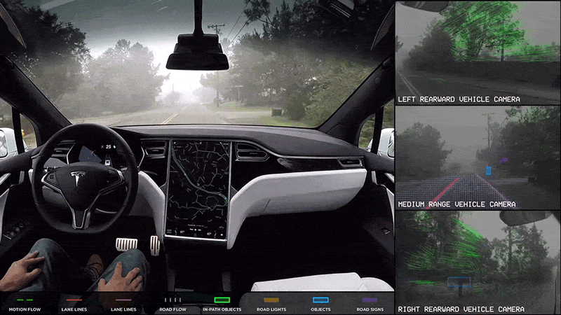
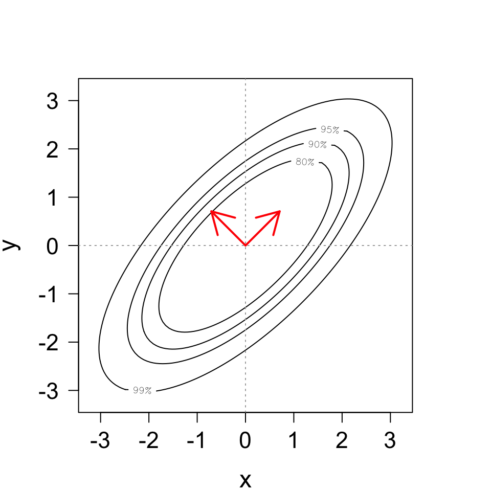

Welcome to STA 542!
Introduction to Time Series Analysis
John Zito
Duke University
STA 542 Fall 2025
Teaching team
| Mug | Name | Role | Office Hours |
|---|---|---|---|
| Li, Aihua | TA | Thu 10:30AM - 12:30PM | |
 |
Zito, John | Instructor | Tue 1PM - 3PM |
Motivation
Controversial statement
Statistics is about quantifying uncertainty to help make decisions.
In modern data science environments, stakeholders are sequentially analyzing high volumes of dependent data and using it to forecast the future in real-time.
Let’s see that in action.
Central banking

E-commerce and web traffic
amazon.com is never “offline.”

Extreme weather forecasting

Monitoring disease case counts
Monitoring the energy grid
Object tracking

Any ethical complaints about this one?
Autonomous vehicle navigation

You get the idea.
Course themes
Let’s take a second look at this
Sequential inference and probabilistic prediction!
Point forecast
Your single-number best guess at tomorrow’s observation:
Forecast interval
A range of likely values for tomorrow’s observation:

Forecast density
Full distribution capturing uncertainty about tomorrow:

And then tomorrow finally comes
So…how’d we do?

The main themes of the course
We will focus on the following:
- Inference should be sequential. We want recursive estimation techniques to handle data that are streaming in real-time;
- Predictions should be probabilistic. We want point, interval, and density forecasts that incorporate many sources of uncertainty;
- If you can manipulate joint distributions, you can do time series analysis. Too many TS textbooks quickly lose sight of this;
And there is a secret fourth theme:
- A Bayesian approach is an excellent way of achieving the goals of sequential inference and probabilistic prediction.
Topics may include
- ARMA models;
- Vector autoregressions (VARs);
- Dynamic linear models (DLMs);
- Hidden Markov Models (HMMs);
- Probabilistic forecast evaluation;
- Nonlinear non-Gaussian state-space models;
- Sequential Monte Carlo (AKA particle filtering);
- Forecast combination.
Syllabus highlights
Bookmark the course page!
Final grade breakdown
Your final course grade will be calculated as follows:
| Category | Percentage |
|---|---|
| Problem Sets | 25% |
| Exam 1 | 25% |
| Exam 2 | 25% |
| Final Project | 25% |
Note
The final letter grade will be based on the usual thresholds, and there might be a curve.
Course components
Problem sets: 6 in total; one due about every 2 weeks;
-
Exams: in-class, with only an 8.5” x 11” note sheet:
- Wednesday October 8 11:45 AM - 12:00 PM;
- Monday November 24 11:45 AM - 12:00 PM;
Final project: no clue, honestly. Talk to me in October.
Late policy
No late work will be accepted unless you request an extension in advance by e-mailing JZ. All reasonable requests will be entertained, but extensions will not be long.
Attendance
Not required. Live your life.
Communication
If you wish to ask questions in writing…
Post on Ed: about general course policies and content;
Email JZ directly: personal matters.
You should not really be emailing Aihua directly for any reason.
Collaboration
You are enthusiastically encouraged to work together on the problem sets. You will learn a lot from each other! Two policies:
- ✅ Acknowledge your collaborators: “Aloysius, Cybill, and I worked together on this problem;”
- ❌ Do not outright share or copy solutions. All submitted work must be your own.
Violation of the second policy is plagiarism. Sharers and recipients alike are referred to the conduct office and receive zeros.
Use of outside resources, including AI
- If you find a problem solution online (or prompt an LLM to generate one) and submit it as your own work, that will obviously be considered plagiarism;
- Otherwise, all outside resources are fair game for you to study and get extra practice;
- If you outsource all of your thinking to a language model, you will probably fail both exams. Good luck!
What background do you need?
I assume you have a working knowledge of…
- matrix algebra;
- OLS regression;
- probability and math stat at the level of Casella & Berger;
- Bayesian statistics at the level of STA 602;
- The
Rprogramming language.
Problem Set 0 gives you a workout in all of the above.
So, let’s get into it.
Time series
A time series is a set of measurements collected over time;
We model these data as a sequence of dependent random variables:
\[ \mathbf{y}_{0:T} = \{\mathbf{y}_0,\,\mathbf{y}_1,\,\mathbf{y}_2,\,...,\,\mathbf{y}_T\}. \]
- A time series model is “just” their joint probability distribution:
\[ p(\mathbf{y}_{0:T}) = p(\mathbf{y}_0)\prod_{t=1}^Tp(\mathbf{y}_t\,|\,\mathbf{y}_{0:t-1}). \]
Stay grounded.
Like much wisdom, that last bullet is simultaneously vacuous and profound. It tells you everything and it tells you nothing all at once. But don’t let this basic fact get lost in the sea of details.
Notation to get used to
- I will not use uppercase \(Y_t\) versus lowercase \(y_t\) to distinguish random variables and fixed realizations. It’s all just \(y_t\);
- A vector \(\mathbf{y}\in\RR^n\) is always an \(n\times 1\) column. The corresponding row vector is \(\By^\tr\);
- For integers \(i<j\), you will see this shorthand all the time:
\[ y_{i:j} = \{y_i\com y_{i+1}\com y_{i+2}\com...\com y_{j-2}\com y_{j-1}\com y_{j}\} . \]
- The symbol “\(p\)” will be aggressively abused and overloaded to represent any probability distribution, sometimes several in the same line:
\[ p(\mathbf{y}_{0:T}) = p(\mathbf{y}_0)\prod_{t=1}^Tp(\mathbf{y}_t\,|\,\mathbf{y}_{0:t-1}). \]
A useful joint distribution: the multivariate normal
Definition
A random vector \(\mathbf{x}=\begin{bmatrix}x_1&x_2&\cdots&x_n\end{bmatrix}^{\scriptscriptstyle\mathsf{T}}\in\mathbb{R}^n\) has the multivariate normal distribution with mean vector \(\boldsymbol{\mu}\in\mathbb{R}^n\) and covariance matrix \(\boldsymbol{\Sigma}\in\mathbb{R}^{n\times n}\) if its density is
\[ p(\mathbf{x}) = \frac { \exp \left( -\frac{1}{2} (\mathbf{x} - \boldsymbol{\mu})^{\scriptscriptstyle\mathsf{T}} \boldsymbol{\Sigma}^{-1} (\mathbf{x}-\boldsymbol{\mu}) \right) } { (2\pi)^{\frac{n}{2}} |\boldsymbol{\Sigma}|^{1/2} } , \quad \mathbf{x} \in \mathbb{R}^n. \]
We denote this \(\mathbf{x}\sim\text{N}_n(\boldsymbol{\mu},\,\boldsymbol{\Sigma})\).
Plenty of linear algebra coming your way!
- Transpose \((\mathbf{x} - \boldsymbol{\mu})^{\scriptscriptstyle\mathsf{T}}\);
- Inverse \(\boldsymbol{\Sigma}^{-1}\);
- Matrix multiplication \((\mathbf{x} - \boldsymbol{\mu})^{\scriptscriptstyle\mathsf{T}}\boldsymbol{\Sigma}^{-1}(\mathbf{x}-\boldsymbol{\mu})\);
- Determinant \(|\boldsymbol{\Sigma}|\);
- \(\boldsymbol{\Sigma}\) is a symmetric and positive definite matrix.
Univariate
If \(n=1\), then we meet an old friend:
\[ p(x)=\frac{\exp\left(-\frac{1}{2}\frac{(x-\mu)^2}{\sigma^2}\right)}{\sqrt{2\pi\sigma^2}}. \]

So \(\mathbf{x} = [x]\sim\text{N}_1([\mu],\,[\sigma^2])\) is just \(x\sim\text{N}(\mu,\,\sigma^2)\).
Bivariate: elliptical contours!
Moments
First:
\[ \boldsymbol{\mu} = E(\mathbf{x}) = \begin{bmatrix} \mu_1 & \mu_2 & \cdots & \mu_n \end{bmatrix}^{\scriptscriptstyle\mathsf{T}} = \begin{bmatrix} E(x_1) & E(x_2) & \cdots & E(x_n) \end{bmatrix}^{\scriptscriptstyle\mathsf{T}} . \]
Second:
\[ \begin{aligned} \boldsymbol{\Sigma} = \text{cov}(\mathbf{x}) &= \begin{bmatrix} \sigma^2_1 & \sigma_{1,2} & \cdots & \sigma_{1,n}\\ \sigma_{1,2} & \sigma_{2}^2 & \cdots & \sigma_{2,n}\\ \vdots & \vdots & \ddots & \vdots\\ \sigma_{1,n} & \sigma_{2,n} & \cdots & \sigma_{n}^2\\ \end{bmatrix} \\ &= \begin{bmatrix} \text{var}(x_1) & \text{cov}(x_1,\,x_2) & \cdots & \text{cov}(x_1,\,x_n)\\ \text{cov}(x_2,\,x_1) & \text{var}(x_2) & \cdots & \text{cov}(x_2,\,x_n)\\ \vdots & \vdots & \ddots & \vdots\\ \text{cov}(x_n,\,x_1) & \text{cov}(x_n,\,x_2) & \cdots & \text{var}(x_n)\\ \end{bmatrix} . \end{aligned} \]
Oh my aching eigen
Eigenvectors and eigenvalues
There are \(n\) orthogonal vectors \(\mathbf{v}_i\in\mathbb{R}^n\) and values \(\lambda_i>0\) satisfying:
\[ \boldsymbol{\Sigma}\mathbf{v}_i=\lambda_i\mathbf{v}_i. \] Positive definite means all the eigenvalues are real and strictly postive.
Eigendecomposition (AKA spectral decomposition)
A useful way to rewrite \(\boldsymbol{\Sigma}\): \[ \begin{aligned} \boldsymbol{\Sigma} &= \begin{bmatrix} \mathbf{v}_1 & \mathbf{v}_2 & \cdots & \mathbf{v}_n \end{bmatrix} \begin{bmatrix} \lambda_1 & & &\mathbf{0}\\ & \lambda_2 & & \\ & & \ddots& \\ \mathbf{0} & & & \lambda_n\\ \end{bmatrix} \begin{bmatrix} \mathbf{v}_1^{\scriptscriptstyle\mathsf{T}} \\ \mathbf{v}_2^{\scriptscriptstyle\mathsf{T}} \\ \vdots \\ \mathbf{v}_n^{\scriptscriptstyle\mathsf{T}} \end{bmatrix} = \mathbf{Q}\boldsymbol{\Lambda}\mathbf{Q}^{\scriptscriptstyle\mathsf{T}}. \end{aligned} \]
We often set \(||\mathbf{v}_i||_2=1\), and so the \(n\times n\) matrix \(\mathbf{Q}\) is orthogonal: \(\mathbf{Q}\mathbf{Q}^{\scriptscriptstyle\mathsf{T}}=\mathbf{Q}^{\scriptscriptstyle\mathsf{T}}\mathbf{Q}=\mathbf{I}_n\).
Who cares?
The eigenvectors of \(\boldsymbol{\Sigma}\) point along the axes of the elliptical density contours. These are the directions of the principal components!

Review: joint distributions
The marginal distribution:
\[ p(\mathbf{y}) = \int p(\mathbf{x},\,\mathbf{y})\,\text{d}\mathbf{x}. \]
The conditional distribution:
\[ p(\mathbf{y}\,|\,\mathbf{x}) = \frac{p(\mathbf{x},\,\mathbf{y})}{p(\mathbf{x})} = \frac{p(\mathbf{x}\,|\,\mathbf{y})p(\mathbf{y})}{p(\mathbf{x})} . \]
Marginals and conditionals
If you apply those formulas to this
\[ \begin{bmatrix} \mathbf{x} \\ \mathbf{y} \end{bmatrix} \sim \text{N}_{n+m} \left( \begin{bmatrix} \boldsymbol{\mu}_x \\ \boldsymbol{\mu}_y \end{bmatrix} ,\, \begin{bmatrix} \boldsymbol{\Sigma}_x & \boldsymbol{\Sigma}_{xy}\\ \boldsymbol{\Sigma}_{xy}^{\scriptscriptstyle\mathsf{T}} & \boldsymbol{\Sigma}_y \end{bmatrix} \right), \]
then you get this:
\[ \begin{aligned} \mathbf{x} &\sim \text{N}_n(\boldsymbol{\mu}_x,\,\boldsymbol{\Sigma}_x)\\ \mathbf{y} &\sim \text{N}_m(\boldsymbol{\mu}_y,\,\boldsymbol{\Sigma}_y)\\ \mathbf{x} \,|\,\mathbf{y} &\sim \text{N}_n \left( \boldsymbol{\mu}_x + \boldsymbol{\Sigma}_{xy}\boldsymbol{\Sigma}_y^{-1}(\mathbf{y}-\boldsymbol{\mu}_y) ,\, \boldsymbol{\Sigma}_x - \boldsymbol{\Sigma}_{xy} \boldsymbol{\Sigma}_y^{-1} \boldsymbol{\Sigma}_{xy}^{\scriptscriptstyle\mathsf{T}} \right) \\ \mathbf{y} \,|\,\mathbf{x} &\sim \text{N}_m \left( \boldsymbol{\mu}_y + \boldsymbol{\Sigma}_{xy}^{\scriptscriptstyle\mathsf{T}}\boldsymbol{\Sigma}_x^{-1}(\mathbf{x}-\boldsymbol{\mu}_x) ,\, \boldsymbol{\Sigma}_y - \boldsymbol{\Sigma}_{xy}^{\scriptscriptstyle\mathsf{T}} \boldsymbol{\Sigma}_x^{-1} \boldsymbol{\Sigma}_{xy} \right). \end{aligned} \]
So the individual components are all normal: \(x_i\sim\text{N}(\mu_i,\,\sigma^2_i)\).
Those ugly conditional formulas are not new
Consider the bivariate case:
\[ \begin{bmatrix} x \\ y \end{bmatrix} \sim\text{N}_2 \left( \begin{bmatrix} \mu_x \\ \mu_y \end{bmatrix} ,\, \begin{bmatrix} \sigma_x^2 & \rho\sigma_x\sigma_y \\ \rho\sigma_x\sigma_y & \sigma^2_y \end{bmatrix} \right). \]
Then the formula collapses to:
\[ y\,|\, x \sim \text{N} \left( \underbrace{\left(\mu_y-\rho\frac{\sigma_y}{\sigma_x}\mu_x\right)}_{\beta_0} + \underbrace{\rho\frac{\sigma_y}{\sigma_x}}_{\beta_1} x ,\, \underbrace{(1-\rho)^2 \sigma^2_y}_{\sigma^2} \right). \]
In other words:
\[ y = \beta_0+\beta_1x + \varepsilon,\quad \varepsilon\sim\text{N}(0,\,\sigma^2). \]
Welcome back to regression 101!
Affine transformations
Fix some objects:
- Random \(\mathbf{x}\sim\text{N}_n(\boldsymbol{\mu},\,\boldsymbol{\Sigma})\);
- Constant \(\mathbf{A}\in\mathbb{R}^{m\times n}\);
- Constant \(\mathbf{c}\in\mathbb{R}^m\).
Then
\[ \mathbf{y} = \mathbf{A} \mathbf{x} + \mathbf{c} \sim \text{N}_m \left( \mathbf{A} \boldsymbol{\mu} + \mathbf{c} ,\, \mathbf{A} \boldsymbol{\Sigma} \mathbf{A}^{\scriptscriptstyle\mathsf{T}} \right) . \]
Prove it on Problem Set 0!
A useful special case (Problem Set 0!)
Linear combinations of independent normals are normal
If \(x_i\overset{\text{indep}}{\sim}\text{N}(\mu_i,\,\sigma^2_i)\) and \(a_i\in\mathbb{R}\) are constant, then
\[ \sum\limits_{i=1}^na_ix_i\sim\text{N}\left(\sum\limits_{i=1}^na_i\mu_i,\, \sum\limits_{i=1}^na_i^2\sigma_i^2\right). \]
- The result on the previous slide is way more general, and the linear combination is still normal even if the \(X_i\) are dependent, but the formula for the variance is less nice;
- The mean formula is right even if the \(x_i\) are dependent and non-Gaussian;
- The variance formula is right even if the \(x_i\) are non-Gaussian.
Independence
If random variables are independent, then they are uncorrelated (their covariance is zero). The reverse is false in general!
So writing \(x_1,\,x_2,\,...,\,x_n\overset{\text{iid}}{\sim}\text{N}(\mu,\,\sigma^2)\) is the same as saying
\[ \begin{bmatrix} x_1\\ x_2\\ \vdots \\ x_n \end{bmatrix} \sim\text{N}_n\left(\mu\mathbf{1}_n,\,\sigma^2\mathbf{I}_n\right). \]
- \(\mathbf{1}_n\) is the \(n\times 1\) vector of all ones;
- \(\mathbf{I}_n\) is the \(n\times n\) identity matrix: ones on the diagonal, zeros off.